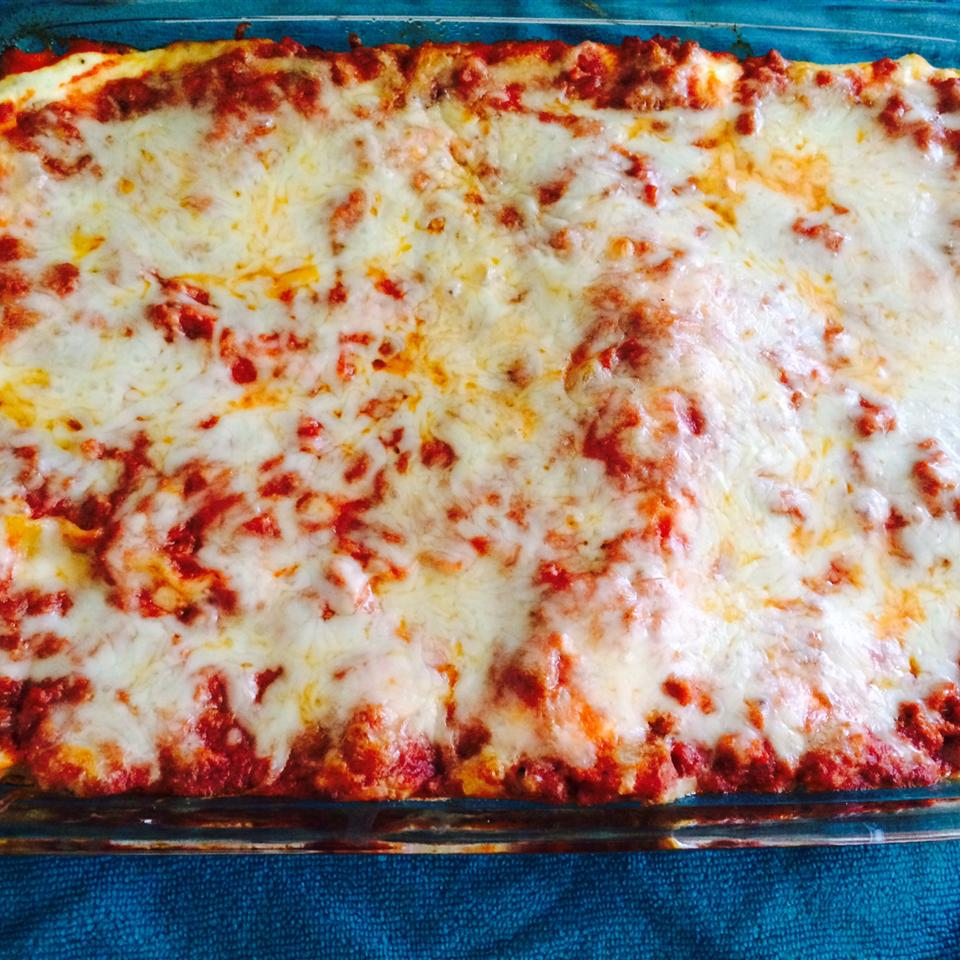

Easy Lasagna III

Description
Recipe by LIZ PEAK
Quick, easy lasagna that tastes great!
Ingredients
10 oz. lasagna noodles
1 1/2 lb. lean ground beef
3 cups ricotta cheese
2 eggs
1 tsp garlic powder
2 tbl dried parsley
salt and pepper to taste
1- 6 oz. can tomato paste
2- 6.5 oz. cans tomato sauce (13 oz.)
Steps
- Preheat oven to 375 degrees F (190 degrees C)
- Bring a large pot of lightly salted water to a boil. Add lasagna noodles and cook for 8 to 10 minutes or until al dente; drain.
- In a skillet, brown ground beef. Using a fork, mix cottage cheese, eggs, garlic powder, parsley, salt and pepper. In a separate bowl combine tomato paste and tomato sauce.
- In a 9x13 inch baking pan, layer noodles, ground beef, tomato sauce mixture and cottage cheese mixture. Two layers of each will fit.
- Cover with tin foil and bake for 30 minutes. Remove tin foil the last 8 minutes of baking time.
Original recipe found here.
Return to homepage